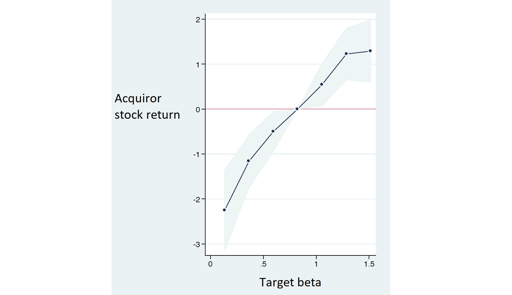

|
October 25, 2020 CAPM (mis)valuation in mergers and acquisitions We saw in the previous post that there is a discrepancy between CAPM-implied and actual stock returns. In other words, if you value a company using the discount rate implied by the CAPM, you obtain a different number than the market valuation. What happens when the CAPM valuation and the market valuation collide? According to a recent survey of valuation professionals, most chief financial officers and investment bankers use the CAPM to value investment projects and companies. One important context in which the CAPM is commonly used is mergers and acquisitions. An all-HEC research team has studied what happens when investment bankers' valuation meets with stock market valuation. The team is composed of Olivier Dessaint (HEC Finance PhD), Jacques Olivier (HEC Finance Prof and Dean of Faculty), Clemens Otto (former HEC Finance Prof) and David Thesmar (former HEC Finance Prof). Suppose a public company (the acquiror) acquires a private company (the target). Recall that "public" means listed in the stock market and "private" means unlisted. The acquiror hires an investment bank to value the target company and the investment bankers do the valuation using the CAPM. What happens if the target company has a low beta? Low beta implies low expected return and therefore high valuation, according to the CAPM. However, we saw in the previous post that the relation between beta and expected return is weaker in the stock market than it is in the CAPM. Therefore, the market-based value of the target is determined by a higher discount rate, hence is higher than the CAPM-based value. If the acquiror uses the CAPM to determine the price paid to acquire the target, it will pay more than the market-based valuation. If the acquiror is itself listed in the stock market, its stock price will decrease because the market estimates that it overpaid for the target. This phenomenon is represented in the figure below. The figure uses data on all acquisitions of private companies by public companies in the US between 1977 and 2015. It shows the average impact of acquisitions on the acquiror's stock price as a function of the target beta. The data show that acquirors lose on average 2% of market value when they acquire a low beta company. When the target has a high beta, the opposite happens. The CAPM-user investment bankers determine a valuation for the target that is below the stock market valuation. In this case, acquirors gain on average 1% of market value when they acquire a high beta company. One may wonder why the shareholders of high beta targets agree to sell at a price below market value. The answer is simple: they too are advised by investment bankers who use the CAPM. And because the target is not listed, the shareholders do not realize that the market-based value is higher than the offered price. In line with this interpretation, the data show that under-pricing of high beta targets exists only when the target is private but not when the target is already listed in the stock market. Is the CAPM or the market right? It is very challenging to answer this question. The CAPM is based on the intuitive idea that stocks more exposed to market risk should command a higher risk premium. But stock market investors do not require that risk premium. This may happens because stock market investors fail to account for risk correctly and therefore overpay for high beta stocks — or because the risk adjustment recommended by the CAPM is not the right one. Finding out which interpretation is correct is a difficult task and an active area of research. Source: This post is based on Dessaint, Olivier, Otto and Thesmar, 2019, CAPM-Based Company (Mis)valuations forthcoming in the Review of Financial Studies. |